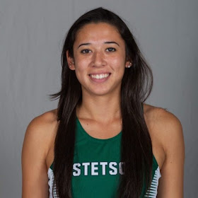

Samantha Harris
Research Assistant - Graduate Student
Research assistant finishing up her Master’s degree in Mechanical Engineering. For the past year, I have been building and managing The University of Florida’s new Biodesign Laboratory. My ideal job would be one where I can develop and master the characteristics and technical expertise needed to research, design, and write new software programs.
Education
Bachelor of Science
Stetson University
Deland, FL 2015-2019
Major: Physics | Minor: Math
3.7 GPA
Master of Science
University of Florida
Gainesville, FL 2019-2021
Mechanical Engineering
3.7 GPA
Skills
- HTML
- CSS
- Javascript
- Unix
- Python
- MATLAB
- Git
- LabView
Projects
In-Memory File System
Principles of Computer System Design Course
University of Florida
August 2021 - present
University of Florida
August 2021 - present
Extended upon an in-memory file system and shell in python
Grasped concept of data organization using inodes and blocks
Implemented common unix commands such as ls and cat
Incorporated read function to the file system
Syringe Pump Automation
Biodesign Laboratory
University of Florida
June 2021
University of Florida
June 2021
Created a virtual instrument (VI) in Labview to control three syringe pumps
Sent and received serial communications between computer and syringe pumps
The VI controlled the volume and rate of fluid going into a microfluidic device
Space Mission Analysis
Astrodynamics Course
University of Florida
January 2020 - May 2020
Performed preliminary analysis for space missions including missions where a spacecraft is transferred between two bodies using MATLAB
Characterized the key properties of the motion of a spacecraft in orbit under central body gravitation
Designed basic impulsive in-plane and out-of-plane maneuvers to transfer a spacecraft between two orbits
Work Experience
Research Assistant
University of Florida
2019-present
- Lead the synthetic cell project utilizing DNA and aptamers to control the motility of a synthetic cell
- Fabricate silicon master molds of microfluidic devices using photolithography and etching
- Guide lab member in constructing a pressure-driven flow controller for micro-volume fluid flow
- Aid in the construction of a custom-built prism-based total internal reflection microscope
- Simplify and explain complex concepts through oral communication and graphic design
Lab Manager
University of Florida
2019-present
- Built the Biodesign Laboratory by researching and purchasing essential supplies and equipment
- Keep track of the lab’s chemical/supplies/equipment inventory and financial spending
- Write standard operating procedures (SOPs) for dangerous or delicate operations in the lab
- Maintain the lab and its equipment: DI water machine, 3D printer, Nikon Ti-Eclipse, etc.
Lab Safety Manager
University of Florida
2019-present
- Meet with Environmental Health & Safety inspectors to ensure compliance with safety regulations
- Run monthly lab safety checks: hazardous waste, laser safety, compressed cylinders, etc.
- Practice proper safety precautions during experiments and held lab mates accountable
Math & Physics Tutor
Stetson University
2017-2019
- Tutored students in College Physics, Modern Physics, Linear Algebra, and Calculus I, II & III
- Advised students on how to improve study skills and implement new learning methods
- Used oral, written, and non-verbal communication channels to instruct and educate students
- Broke down difficult problems into simpler concepts that could be easily interpreted
- Built meaningful connections with students and adapted to their learning needs
Athletics
Division I NCAA Beach Volleyball Athlete
Stetson University
2015-2019
Assisted team in winning Atlantic Sun Conference Championship in 2017, 2018 and 2019
Competed in the NCAA Beach Volleyball National Championships in 2016 and 2019
Awards
Graduate School Preeminence Award Fellowship
University of Florida
2019
Maris Prize for Senior Presentation
Stetson University
2019
Presidential Academic Scholarship
Stetson University
2015
Athletic Beach Volleyball Scholarship
Stetson University
2015